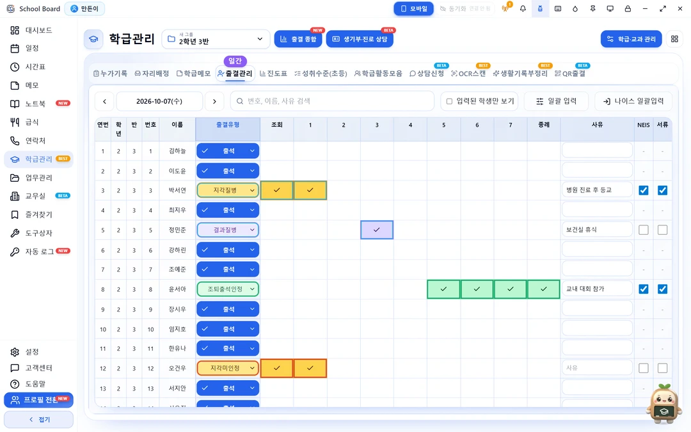
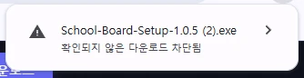
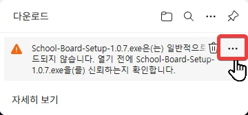
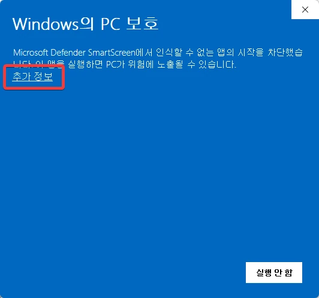
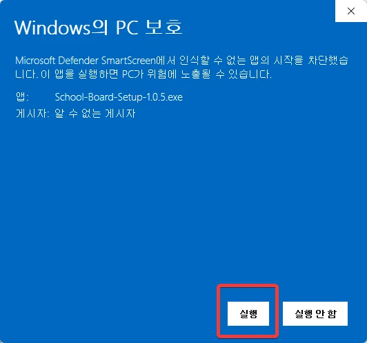

유치원
원 급식과 일정부터 복무 상신·품의 같은 행정 업무까지 가볍게.
- 유치원 급식 조회
- 복무·초과근무 상신
- 원클릭 품의
- 온라인 등록부
선생님 1만 명이 쓰는 무료 업무 앱
유치원부터 고등학교까지, 교사라면 누구나.
출결·시간표·생기부·시험·한글 문서까지 스쿨보드 하나로 끝내요.

교사라면 누구나
학교급이 달라도 매일 하는 일은 같아요. 여기에 학교급마다 꼭 필요한 기능을 더했어요.
원 급식과 일정부터 복무 상신·품의 같은 행정 업무까지 가볍게.
성취수준 체크가 생기부 초안이 되고, 전자칠판엔 교실용 대시보드를.
시험 운영과 성적 업무를 계산부터 출력까지 한 번에.
선택교과 편성부터 진로진학 상담, 야간 자율학습 출결까지.
모든 학교급 공통대시보드 · 시간표 · 급식 · 일정·할 일 · 메모 · 업무포털 자동 로그인 · 글깎이 · PDF 편집기 · 똑똑이
스쿨보드가 대신 해요
아직 안 올린 출결만 모아 날짜별로 나이스에 자동으로 입력하고, 다시 조회해 확인까지 해요.

오늘 브리핑, 수업 알림, 일정·출결 입력 심부름까지.
나이스·에듀파인·교데통 알림을 한 위젯에서.

누가기록·성취수준·활동을 모아 쓰고 AI로 다듬어요.

열어 둔 한/글 문서를 글깎이가 바로 고쳐요.

찍은 시각으로 교시까지 알아서 나눠요.

고사실 배정부터 좌석표·감독표 출력까지 한곳에서.

믿고 쓰는 프로그램
학급 기록, 연락처, 메모 같은 데이터는 선생님 컴퓨터에 Windows 보안 저장소로 암호화해서 보관해요. 업무포털 인증서 비밀번호도 마찬가지예요.
동기화를 켜면 선생님 본인의 Google Drive에만 저장돼요. 스쿨보드가 만든 파일만 다루고, 개발자는 볼 수 없어요.
생기부 PDF 분석은 컴퓨터 안에서만 하고 주민번호·주소는 읽지 않아요. 생기부 초안을 쓸 때 AI에는 학생 이름을 보내지 않아요.
학교 도입 안내
에듀집 ‘미등록 자료 요청’ 처리 결과 스쿨보드는 ‘해당없음’, 사유는 ‘교사용 및 행정업무 지원 서비스’로 안내됐어요.
출처: 에듀집 > 학습지원 소프트웨어 > 미등록 자료 요청 · 처리일

저작권 등록
컴퓨터프로그램저작물 등록번호 C-2026-018961호, 등록일 2026년 4월 15일
Google 공식 연동 · 모바일

휴대폰 카메라로 찍으면
m.schoolboard.cc가 열려요.
꾸준한 업데이트
선생님들이 보내 주신 의견으로 지금까지 300가지 넘게 고치고 더했어요. 앱은 알아서 새 버전으로 바뀌어요.
1분이면 충분해요
Windows에 설치하고 학교 이름만 검색하면 준비 끝이에요. 새 버전은 자동으로 업데이트돼요.
아직 코드 서명 전이라 브라우저와 Windows가 경고를 띄울 수 있어요. 보안에는 문제가 없으니 아래 순서대로 진행해 주세요.
‘확인되지 않은 파일 다운로드’ 창이 뜨면 [확인되지 않은 파일 다운로드]를 눌러 주세요.


‘파일을 안전하게 다운로드하시겠습니까?’ 창이 뜨면 [저장]을 눌러 주세요.



[추가 정보]를 누른 뒤 아래에 나타나는 [실행]을 누르면 설치가 시작돼요.


설치 파일이 실행되지 않고 스마트 앱 컨트롤이 막았다는 안내가 뜨면, 작업 표시줄의 검색이나 시작 메뉴에서 스마트 앱 컨트롤을 검색해 열어 주세요. 띄어쓰기까지 똑같이 입력해야 찾을 수 있어요.
‘앱 및 브라우저 컨트롤 > 스마트 앱 컨트롤’ 화면에서 [끄기]를 고른 뒤 설치 파일을 다시 실행하면 돼요.
스쿨보드는 학운위 심의 대상이 아니에요. 에듀집 ‘미등록 자료 요청’에서 ‘교사용 및 행정업무 지원 서비스’로 분류되어 처리현황이 ‘해당없음’으로 안내돼요. 처리 결과 확인하기
Windows 11의 스마트 앱 컨트롤이 막고 있을 수 있어요. 시작 메뉴에서 ‘스마트 앱 컨트롤’을 검색해 [끄기]를 고른 뒤 다시 실행해 주세요. 그림으로 보기
화면 오른쪽 아래 트레이에서 스쿨보드 아이콘을 오른쪽 클릭하고 불투명 안전 모드를 켜 주세요. 흰 배경의 일반 창으로 다시 열려요.
설정 > 일반에서 학교가 제대로 선택돼 있는지, 인터넷이 연결돼 있는지 확인해 주세요. 그래도 안 되면 새로고침(↻) 버튼을 눌러 보세요.
설정 > 데이터 관리 > Google 동기화에서 같은 Google 계정을 연결하면 자동으로 맞춰져요. 인터넷 없이 옮기려면 .board 파일로 내보낸 뒤 다른 컴퓨터에서 불러오세요.
사이드바에서 프로필을 추가하세요. 프로필마다 데이터, 설정, Google 연결이 따로 저장돼요.
새 버전이 나오면 앱이 알아서 받아 설치해요. 설치 파일을 다시 받을 필요는 없어요.
설정 > 정보 > 오류 보고에서 로그 파일을 확인할 수 있어요. 사이드바의 고객센터에 문의를 남겨 주시면 빠르게 도와드릴게요.